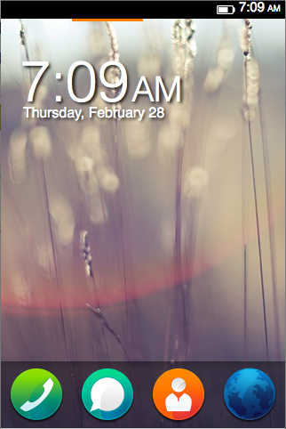
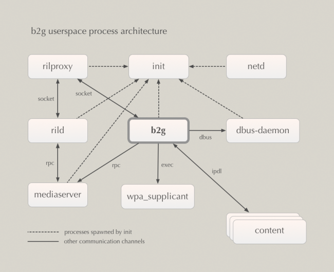
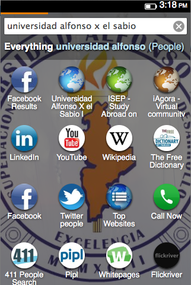
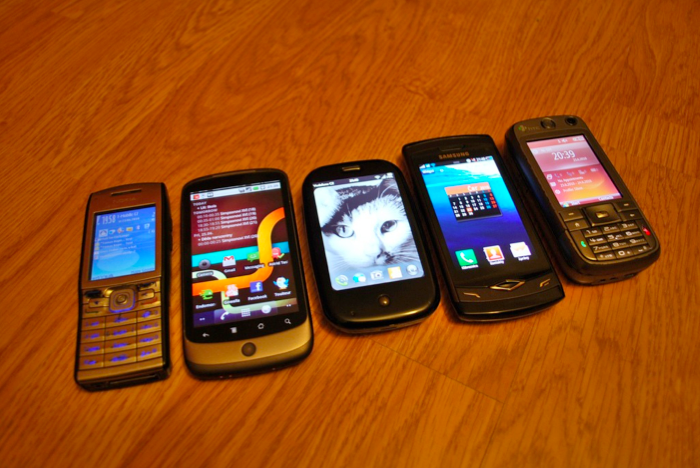
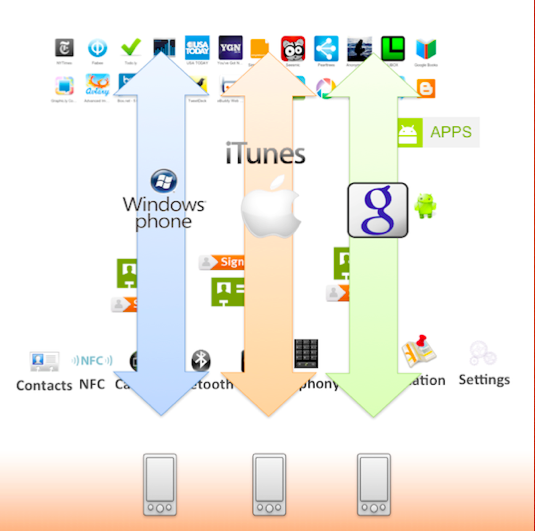
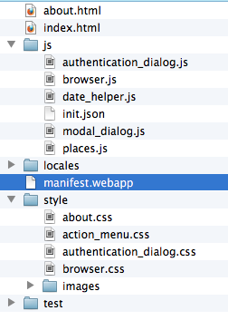
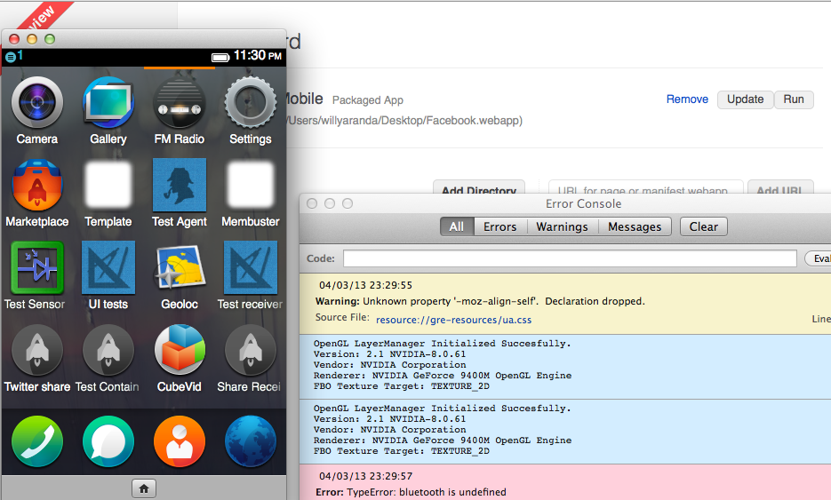
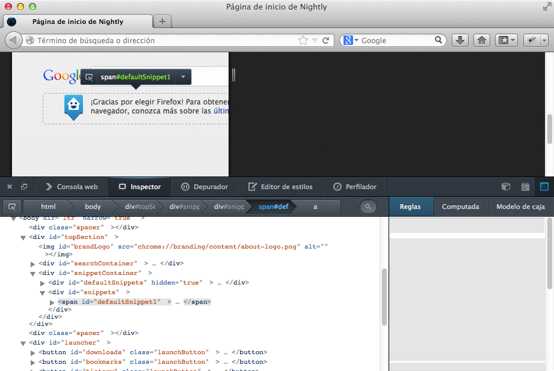
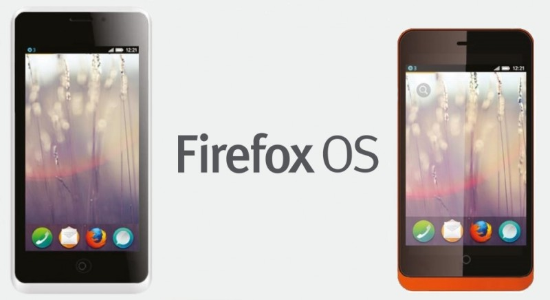

Firefox OS
La web es la plataforma
Fernando Rodríguez Sela
OWD Backend Developer Leader - Telefónica Digital
frsela@tid.es
@mangiacaprini
github.com/frsela
Guillermo López Leal
Mozilla Hispano - Telefónica Digital
gll@tid.es
@willyaranda
github.com/willyaranda
Introducción
Panorama móvil
Prácticamente podemos decir que es un duopolio
- Apple con iOS
- Google con Android
Estas dos compañías marcan las reglas del juego
¡ El resto sólo observamos !
Windows Phone, BB y demás se reparten una mínima parte del pastel
- Hace una década liberó la web:
- Web controlada por IE
- Firefox devolvió el control al usuairo
- Hoy quiere liberar al mundo móvil
- Padres: Andreas Gal y Chris Jones
- Nace el 25 de Julio de 2011

Telefónica Digital (Actual I+D)
El hacer un teléfono no es nada nuevo para Telefónica: Vitelcom
- Operadores están perdiendo el control
- Mal uso de las redes generan mala QoS
- Tener un terminal abierto favorecerá la innovación
- ¿Usar tecnologías web? ¡Si! varios intentos internos:
- Web Runtime (Nokia)
- BONDI → WAC
- Bluephone (basado en greenphone)
- SO basado en Webkit
La unión hace la fuerza

¿Qué es FirefoxOS?
Gaia
- ¿Una Diosa griega?
- También: la interfaz de usuario
- 100% HTML5, CSS3 y JS
- Webapps
- System: Aplicación más importante
- Notification bar
- Window management
- System dialogs / Trusted UI / Popup dialogs
- Install / update
- Permissions management
- Homescreen
- Webapps
Gaia
Gecko
- ¿Un lagarto?
- No, también es el corazón del Firefox, Thunderbird y demás miembros de la familia mozilla
- Se encarga de interpretar el HTML, CSS, JS
- Graphics stack, layout engine y virtual Machine
- Network stack
- Principalmente desarrollado con C/C++ y JavaScript (XPCOM)
- Portado a múltiples plataformas (HAL):
- Windows
- Mac OS
- Linux, Unix…
- Android
- Gonk … ¿Gonk?
Gonk
- ¿Un juguete?
- No, también es la capa más "baja" de Firefox OS Internamente y de cara a Gecko lo consideramos un SO más
- Port del núcleo de Android
- Linux kernel
- Módulos y drivers heredados de Android (RIL, Radio…)
- Herramientas auxiliares (adb, rilproxy…)
Arquitectura

Procesos

Modelo de desarrollo
- Software libre
- Comunidad Mozilla + Telefonica Digital
WebApps
Con tecnologías web hacemos páginas web
Entonces, ¿a qué nos referimos?
Para hacer aplicaciones necesitamos:
- Capacidad de funcionamiento offline
- Almacenamiento local
- Conectividad
- Acceso al sistema de ficheros
- Multimedia
¿Los estándares web lo soportan?
 html5rocks.com
html5rocks.com
HTML5 / CSS3 / JavaScript
- Capacidad de funcionamiento offline : application cache, localStorage, webSQL…
- Almacenamiento local : indexedDB, Web Storage…
- Conectividad : WebSockets, Server-Sent events
- Acceso al sistema de ficheros : XMLHttpRequest2
- Multimedia : audio y video tags, 3D Canvas, animaciones CSS…
Pero aún nos falta …
- Control de energía
- Vibrador
- Envío de mensajes cortos
- Telefonía
- …
No todo podemos implementarlo con la web, necesitamos acceder a recursos del sistema
WebAPIs
Necesitamos exponer funcionalidades nativas a la web
WebTelephony
Funciones de telefonía. Imprescindible para realizar y recibir llamadas
http://sysapps.github.com/sysapps/proposals/Telephony/Telephony.html
var call = navigator.mozTelephony.dial(‘+34983367743’); // Launch a call
call.addEventListener('statechange', function(e) { // Listening
if(e.target.state === ‘alerting’) window.console.log(‘Ringing the other party!’);
if(e.target.state === ‘connected’) { // Do something. The other party answered }
});
WebSMS / MMS
Funciones de mensajería
http://sysapps.github.com/sysapps/proposals/Messaging/Messaging.html
var req = navigator.mozSms.send(‘+34638883076’,’Hi, coffee?’); // Send
req.onsuccess = function() { window.console.log(‘Sent!!’) };
navigator.mozSms.addEventListener(‘received’,receivedCB); // Listen to new
Contacts
Gestión de la agenda de contactos (crear, leer, actualizar, borrar y buscar)
http://sysapps.github.com/sysapps/proposals/Contacts/Contacts.html
var options = {
filterBy: ['tel'],
filterOp: 'contains',
filterValue: ‘983367743’
};
var request = navigator.mozContacts.find(options);
request.onsuccess = function (e) {
if (e.target.result.length == 0)
else { contactName = e.target.result[0].name }
}
Settings
Leer y modificar propiedades del sistema
https://wiki.mozilla.org/WebAPI/SettingsAPI#Proposed_API
var request = navigator.mozSettings.getLock().get('language.current');
request.onsuccess = function(e) {
selectedLocale = e.target.result['language.current’];
}
Mobile Network Connection
Interfaz con la RIL
https://wiki.mozilla.org/WebAPI/WebMobileConnection
navigator.mozMobileConnection.cardState; // SIM card state
navigator.mozMobileConnection.voice; // Voice connection state
navigator.mozMobileConnection.data; // Data Connection state
Device Media Storage
Recuperar y almacenar contenido multimedia
https://wiki.mozilla.org/WebAPI/DeviceStorageAPI
var store = navigator.getDeviceStorage(‘pictures’); // Picture store
store.addNamed(blob,’myPicture’); // Add a new element
store.enumerate(); // Iterate over the store (cursor)
Camera
Operaciones para trabajar con la cámara de fotos
Sin spec. En futuro: Alinear con WebRTC
navigator.mozCameras.getCamera(options, function gotCamera());
camera.getPreviewStream(function gotPreview(stream) {
preview.mozSrcObject = stream
});
camera.getPreviewStreamVideoMode; // For video
camera.capabilities; // Hardware capabilities
Battery Status
Monitorizar batería
http://www.w3.org/TR/battery-status/
navigator.battery.onlevelchange = function () {
console.log(‘New battery level: ‘ + navigator.battery.level);
};
Vibration
Actuar sobre el vibrador del terminal
http://www.w3.org/TR/vibration/
navigator.mozVibrate(1000); // Vibrate a second
navigator.mozVibrate(); // cancel the current vibration
Screen Lock
Detectar giros del terminal y bloquear orientación
http://www.w3.org/TR/screen-orientation/
screen.addEventListener(‘orientationchange’,function() {
window.console.log(‘New Orientation: ‘,screen.orientation);
});
screen.lock(‘landscape’);
Power Management
Gestión de energía
https://wiki.mozilla.org/WebAPI/PowerManagementAPI
navigator.mozPower.reboot();
navigator.mozPower.powerOff();
navigator.mozPower.screenBrightness = 0.5;
navigator.mozPower.screenEnabled = false;
Resource Lock
Bloquear recursos, por ejemplo que se apague la pantalla si estamos reproduciendo un video
http://www.w3.org/TR/PowerManagementAPI/
var lock = navigator.requestWakeLock(‘screen’);
lock.unlock();
Notifications
Publicación de notificaciones (barra superior)
http://www.w3.org/TR/notifications/
var notif = navigator.mozNotification.createNotification (
"Meeting about to begin", "Room 101”, ‘icon.png’ );
notif.onclick = function() { // Do something };
notif.show();
Keyboard IME
Teclado virtual
https://wiki.mozilla.org/WebAPI/KeboardIME
navigator.mozKeyboard.sendKey(keyCode, charCode); // Send key to UI comp.
navigator.mozKeyboard.onfocuschange
Push Notifications
Notificaciones asíncronas. Varias propuestas:
https://wiki.mozilla.org/WebAPI/SimplePush http://www.w3.org/TR/push-api/ http://frsela.github.com/notification_server_doc/
// Manifest
{"messages": [
{"push": "/view_to_launch.html"}
]}
var req = navigator.pushNotification.register();
req.onsuccess = function(e) {
endpoint = e.target.result.pushEndpoint; // sends the to the server
}
navigator.mozSetMessageHandler('push', {
handleMessage: function(e) {
if (e.target.pushEndpoint == endpoint)
getNewMessagesFromAppServer(e.target.version);
}
});
Marketplace
marketplace.firefox.com
Everything.me
dynamic app search
- Potente motor de búsqueda integrado
- Los resultados se pueden dejar como webapps en el teléfono se instalan como "untrusted non-cached hosted web pages"
Presentación
Guillermo López, @willyaranda, willyaranda@mozilla-hispano.org
Mozilla Hispano
(paréntesis personal)
o historias del abuelo cebolletaTHE WEB IS THE PLATFORM
El diablo…
… o el revolucionario de la webLos años pasaron…
Segunda guerra
Going mobile
Ecosistemas cerrados
Mobile web is webkit-centric
Y no queremos (ni debemos) repetir el mismo problema que con IE6
TO THE RESCUE!!!
¿Cómo es una webapp?
manifest
{
"name": "Browser",
"description": "Gaia Web Browser",
"launch_path": "/index.html",
"type": "certified",
"developer": {
"name": "The Gaia Team",
"url": "https://github.com/mozilla-b2g/gaia"
},
"permissions": {
"browser":{},
"systemXHR":{},
"settings":{ "access": "readonly" },
"geolocation" : {},
"desktop-notification" : {}
},
"locales": {
"en-US": {
"name": "Browser",
"description": "Gaia Web Browser"
},
"fr": {
"name": "Navigateur",
"description": "Navigateur Web Gaia"
}
},
"default_locale": "en-US",
"icons": {
"120": "/shared/resources/branding/Browser.png",
"60": "/shared/resources/branding/Browser.png"
},
"activities": {
"view": {
"filters": {
"type": "url",
"url": { "required":true, "regexp":"/^https?:/" }
}
}
}
}
Web Activities
"activities": {
"pick": {
"filters": {
"type": ["image/jpeg", "image/png"]
},
"disposition": "inline",
"returnValue": true,
"href": "/index.html#pick"
}
//code
navigator.mozSetMessageHandler(‘activity’, function(activity) {
activityName = activity.source.name;
});
window.addEventListener(‘click’,function() {
activity.postResult(selectedImage)
});
//call
var activity = new MozActivity(‘pick’, ‘image/*’);
activity.onsuccess = function (e) { e.target.result }
activity.onerror = function() {e} { }
System Messages
"messages": [
{ "alarm": "/facebook/fb_sync.html" },
{ "notification": "/dialer/index.html#keyboard-view" },
{ "telephony-new-call": "/dialer/index.html#keyboard-view" }
]
navigator.mozSetMessageHandler('telephony-new-call', function newCall() {
openCallScreen();
});
Building blocks
buildingfirefoxos.comSeguridad
- Las aplicaciones deben declarar que APIs privilegiadas van a utilizar
- Varios niveles de confianza
- Certified applications: Son del sistema (core)
- Trusted applications: Preinstaladas y certificadas (firmadas)
- Webapps:
- Trusted package: Del market y firmadas
- Untrusted hosted webapp: Página web HTML5
- Search engine (ev.me): Webpage bookmarks
- Same origin policy y Content Security Policy (CSP)
MULTIPLATAFORM
Firefox OS y Android
Desktop too!
SDK
¿lo tengo que repetir?
en serio… ¿qué he dicho antes?
THE WEB IS THE PLATFORM!!!
Firefox OS Simulator
Firefox OS Emulator
Basado en Qemu
Firefox devtools
Teléfonos
 http://geeksphone.comDEMO TIME!!!!1!!
… sí, estamos tan seguros de que todo funciona que hacemos una demo ¡REAL!Mozilla
Non profit
Work for mankind
Openness
Innovation-driven
We do not have stakeholders…
… so we do not answer to nobody except you
Meritocracy
Community based
THE WEB IS THE PLATFORM!!
GRACIAS!
FAQ
- ¿Vais a hacer un duelo de espadas con Chrome?
- ¿Puedo usar "código nativo" en Firefox OS?
- ¿Puedo portar mi aplicación de Android?
- ¿Por qué un sistema operativo MÁS?
- ¿Ubuntu touch? ¿Tizen? ¿Sailfish? ¿WebOS?
- ¿PhoneGap?